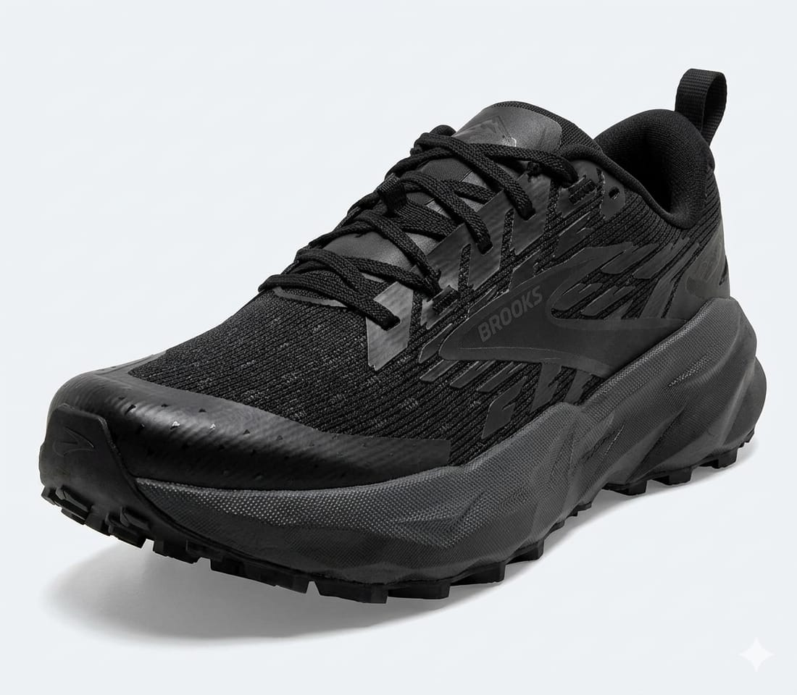
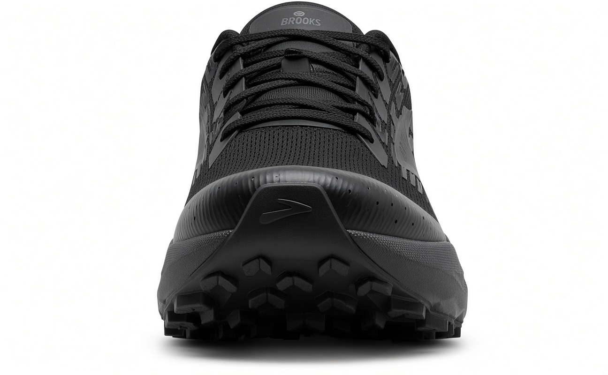
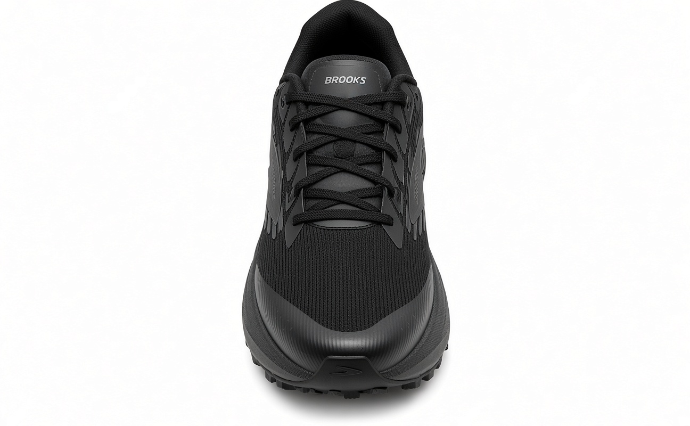
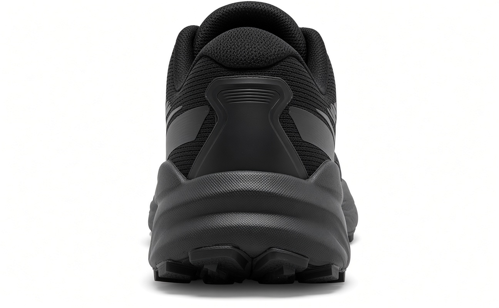

Zapatilla Brooks Cascadia 17
s/231.00
Talla:
Descripción
Las Brooks Cascadia 17 son las zapatillas definitivas para los amantes del trail running y el senderismo por terrenos difíciles. Diseñadas para ofrecer una estabilidad superior en cualquier tipo de suelo, cuentan con la amortiguación suave DNA LOFT v2 que protege tus articulaciones en largas distancias. Su suela de alta tracción TrailTack Green proporciona un agarre excepcional tanto en superficies mojadas como secas, dándote la seguridad que necesitas en cada paso por la montaña.